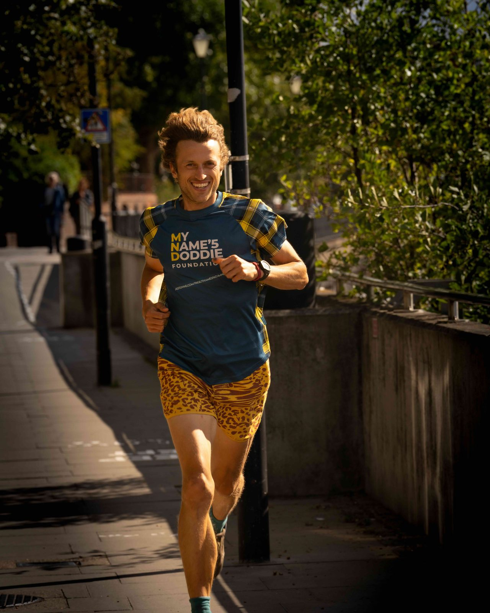

Why the Thames
"It is a desperately cruel disease. This is especially personal for me because my amazing mum was diagnosed with MND last year."
I have a good pair of legs, so I better put them to use for a cause that desperately needs more funding. Motor Neurone Disease is a progressive disease that damages the cells carrying messages from the brain to the muscles. As muscles weaken, it becomes harder to walk, talk, eat and breathe. It is a desperately cruel disease. This is especially personal for me because my amazing mum, Elisa, was diagnosed with MND last year.
I am raising money for My Name’5 Doddie Foundation (MNDF), supporting their vital research and their mission to create a world free of MND. MNDF was set up my former Scotland rugby player and sports personality Doddie Weir after he was diagnosed with the dissease. Doddie died aged 52 in 2022, almost six years after his diagnosis. His charity has so far committed over £24million to cutting-edge research. There is no cure for MND, ut research is making progress. Treatments are improving, and science is beginning to understand genetic and environmental factors behind MND.
The Thames has been my guide in the past. When I was a student, I swam in it every week, and rivers have continued to be a source of connection and grounding for me. So it feels right to follow this river for something that matters so much.
